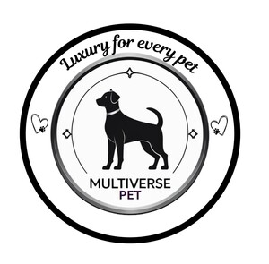
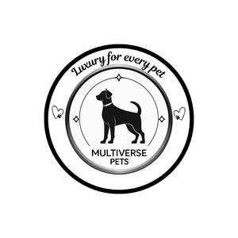

Trade Mark Journal No.2025/036 5 September 2025
UK00004248983 13 August 2025 (3,5,12,18,20,21,24,28,31,41,43,44,45)
Mark 1

Mark 2

- Class 3
- Shampoos for pets; Pet stain removers; Pet shampoos; Pet odor removers; Non-medicated pet shampoos.
- Class 5
- Dietary pet supplements in the form of pet treats; Attractants for pet animals; Anti-flea collars for pets; Diapers for pets; Vitamins for pets; Disposable pet diapers; Pet odor neutralizer; Pet odour neutraliser; Repellents for dogs; Dog lotions for veterinary purposes; Animal flea collars; Disposable housebreaking pads for pets; Sanitary pants for pets; Disposable house training pads for pets; Cat repellents; Dogs (Repellents for -); Anti-parasitic collars for animals; Antiparasitic collars for animals.
- Class 12
- Pet strollers; Dog guards for use in vehicles; Pushchairs for pets.
- Class 18
- Pet clothing; Raincoats for pet dogs; Pet leads; Collars for pets; Clothing for pets; Dog leashes; Pet hair bows; Clothing for domestic pets; Dog clothing; Dog collars; Cat collars; Dog apparel; Electronic pet collars; Animal leashes; Dog shoes; Dog coats; Dog parkas; Dog bellybands; Dog leads; Rawhide chews for dogs; Clothing for dogs; Coats for dogs; Collars for cats; Dog waste bag dispensers adapted for use with leashes; Leashes for animals; Collars for animals; Collars of animals; Coats for cats; Animal apparel; Animal harnesses; Animal covers; Animal leads.
- Class 20
- Pet crates; Pet furniture; Pet houses; Pet cushions; Beds for pets; Beds for household pets; Cushions (Pet -); Pet grooming tables; Kennels for household pets; Dog kennels; Inflatable pet beds; Grooming tables for pets; Dog houses [kennels]; Dog beds; Dog baskets; Kennels; Non-metal dog tags; Dog tags, not of metal; Cat beds; Stuffed animals; Animal housing and beds; Cat trees; Cat baskets; Scratching posts for cats; Claws (Animal -); Animal claws; Cat flaps of non-metallic materials; Playhouses for pets; Nesting boxes for pets; Nesting boxes for household pets; Household pets (Nesting boxes for -).
- Class 21
- Brushes for grooming pet animals; Litter scoops for use with pet animals; Pet grooming glove; Litter trays for pet animals; Pet paw cleaners, non-electric; Food containers for pet animals; Animal-activated pet feeders; Pet lick mats; Pet feeding dishes; Pet feeding bowls; Electronic pet feeders; Cages for pets; Pet treat jars; Pet drinking bowls; Cages for household pets; Pets (Cages for household -); Electric pet brushes; Automatic pet feeders; Pet feeding and drinking bowls; Deshedding brushes for pets; Deshedding combs for pets; De-shedding combs for pets; Pet feeding bowls, automatic; Brushes for pets; Household containers for storing pet food; Litter trays for pets; Dog food scoops; Litter boxes for pets; Animal grooming gloves; Cat litter pans; Cat litter boxes; Filters for use in cat litter pans; Raccoon dog hair for brushes; Trays (Litter -) for pets; Automatic litter boxes for pets; Toothbrushes for pets; Plastics trays for use as litter trays for cats; Pets (Litter boxes [trays] for -); Litter boxes [trays] for pets.
- Class 24
- Blankets for household pets.
- Class 28
- Pet toys; Toys for pet animals; Dog toys; Toys for domestic pets; Pet toys made of rope; Whack-a-mole toys for pets; Toys and playthings for pet animals; Toys for pets; Pet toys containing catnip; Toys, games and playthings for pet animals; Toy dogs; Toys for dogs; Snuffle mats being dog toys; Imitation bones being toys for dogs; Toys for cats; Toys for animals.
- Class 31
- Pet food for dogs; Pet food; Dog food; Pet foods in the form of chews; Pet treats in the nature of bully sticks; Pet foods; Pet foodstuffs; Pet beverages; Foodstuffs for pet animals; Edible pet treats; Edible silvervine powder for pet cats; Cat food; Dog foods; Sand for pet toilets; Cat litter; Animal litter; Beverages for pets; Food for cats; Cat litter and litter for small animals; Dogs; Dog biscuits; Biscuits (Dog -); Litter for dogs; Biscuits for dogs; Food for dogs; Bones for dogs; Dog treats [edible]; Edible dog treats; Chewing bones for dogs; Foodstuff for dogs; Cat biscuits; Food for racing dogs; Bark for use as animal litter; Edible chews for dogs; Cat litters; Beverages for dogs; Foodstuffs for dogs; Digestible chewing bones for dogs; Litter for cats; Pet food for birds; Cats; Kitty litter; Biscuits for puppies; Animal biscuits; Food preparations for dogs; Canned foods for dogs; Cat treats [edible]; Canned foodstuffs for dogs; Beverages for cats; Foodstuffs for puppies; Foodstuffs for cats; Beverages for canines; Biscuits for animals; Foods containing chicken for feeding dogs; Foods in the form of rings for feeding to dogs; Foods flavoured with chicken for feeding dogs; Pet birds; Foods flavoured with liver for feeding dogs; Foods containing liver for feeding dogs; Foods flavoured with beef for feeding dogs; Foods containing beef for feeding dogs; Litter for domestic animals; Litter for small animals; Cheese flavoured foodstuffs for dogs; Food preparations for cats; Pet rabbit food; Animal litter for cats; Pet animals; Pets (Aromatic sand for -) [litter]; Aromatic sand for pets [litter]; Aromatic sand [litter] for pets; Animal feedstuffs; Animal food; Animal feed; Animal feeds; Animal beverages; Animal feed preparations; Food for animals; Animal foodstuffs derived from vegetable matter; Mixed animal feed; Wheat proteins for animal food; Formula animal feed; Forage for animals; Loose hemp for use as animal bedding; Fish meal [animal feed]; Animal foodstuffs in the form of nuts; Canned foodstuffs for cats; Catnip; Small animal litter; Foods containing chicken for feeding cats; Foods containing liver for feeding cats; Foods containing beef for feeding cats; Foods flavoured with chicken for feeding cats; Foods flavoured with beef for feeding cats; Edible treats for animals; Edible chews for animals; Cereal cakes for animals; Foods flavoured with liver for feeding cats; Sweet biscuits for consumption by animals.
- Class 41
- Teaching of pet care in the management of pet shows; Teaching of pet care in the management of pet exhibitions; Teaching of pet care; Tuition for animal beauticians in animal grooming; Training in dog handling; Animal training; Animal exhibitions.
- Class 43
- Pet boarding services; Boarding for pets; Pet hotel services; Services for the housing of pet fish; Services for the housing of pet birds; Pet day care services; Dog day care services; Animal boarding; Boarding kennel services.
- Class 44
- Pet grooming; Care of pet animals; Grooming of pets; Pet grooming services; Services for the care of pet animals; Grooming salon services for pet animals; Pet bathing services; Animal beautician services for cats; Animal beautician services for dogs; Dog grooming services; Breeding of dogs; Grooming of animals; Canine massage; Animal grooming; Stud services (Animal -); Animal clipping; Animal grooming services; Breeding of animals.
- Class 45
- Pet sitting; Dog walking services; Cat feeding services [in owners absence].
Multiverse Pets Company Ltd